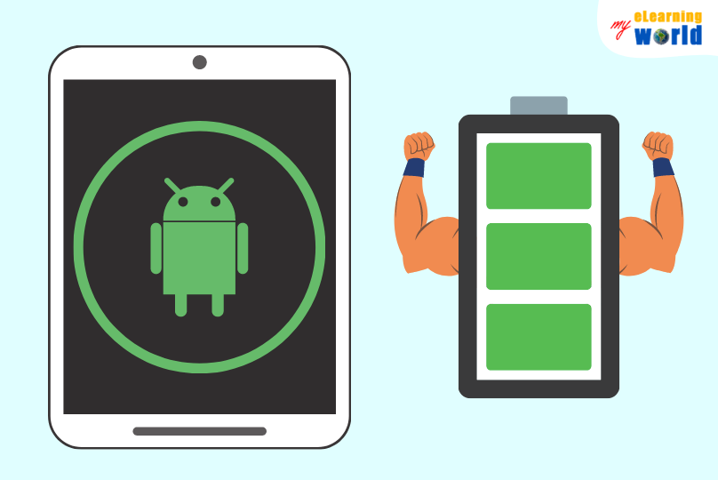

Galaxy Z Flip 3 review: Samsung’s cheaper, better hi-tech flip phone
The flip phone continues its march back towards the mainstream thanks to Samsung’s folding-screen technology. Now cheaper, smoother, water resistant and more durable than last year’s model, it may leave you questioning why you would buy a standard phone at the same price.
The Galaxy Z Flip 3 replaces the original Z Flip (there was no version two) and costs £949 ($999/A$1,499) – £350 cheaper than its predecessor and on a par with the top smartphones, including Samsung’s £949 Galaxy S21+.
The Flip 3 is one of Samsung’s third-generation folding-screen devices alongside the £1,599 Galaxy Z Fold 3 tablet-phone hybrid. The Fold 3 is about putting a tablet in your pocket, while the Flip 3 is essentially a smartphone that folds in half like a makeup compact.
The new Flip 3 is an evolution of Samsung’s previous foldable device. It is slightly thinner, shorter and narrower, the hinge has been refined, the design on the outside is less showy and it feels a bit more sturdy.
Compared with the original Flip, the folding 6.7in OLED screen is twice as fast, with a 120Hz refresh rate, bringing it into line with top regular smartphones and making scrolling and other interactions visibly smoother. Its ultra-thin glass cover is 80% more resilient too, though still considerably softer than standard glass, and much smoother to the touch, allowing your fingers to glide over the surface as easily as a regular phone.
There’s still a crease you can feel where the screen folds, but it is only visible when the screen is off and at certain angles, making it easy to overlook.
Perhaps the biggest physical upgrade is the phone’s water resistance – a first for folding-screen phones – rated to IPX8 standards of 1.5-metre depths for 30 minutes, matching the best regular devices.
It is important to note that the device is not dust-resistant to the same extent, as Samsung has waterproofed each half of the phone and then put anti-corrosion treatment on the hinge in between. Dust could still get in to the hinge, but as the previous model proved, concerns of it causing issues are largely overblown if you’re a little bit careful with the device.
Specifications
- Main screen: 6.7in FHD+ 120Hz AMOLED Infinity Flex Display (425ppi)
- Cover screen: 1.9in AMOLED (302ppi)
- Processor: Qualcomm Snapdragon 888
- RAM: 8GB of RAM
- Storage: 128 or 256GB
- Operating system: One UI 3.1 based on Android 11
- Camera: dual rear camera: 12MP wide angle, 12MP ultra-wide angle, 10MP selfie camera
- Connectivity: 5G, nano sim + esim, wifi6, NFC, Bluetooth 5 and GPS
- Water resistance: IPX8 (1.5 metre depths for 30 minutes)
- Folded dimensions: 86.4 x 72.2 x 17.1-15.9mm
- Unfolded dimensions: 166.0 x 72.2 x 6.9mm
- Weight: 183g
Top performance, average battery life
The Z Flip 3 ships with Qualcomm’s latest top processor, the Snapdragon 888, which is the same chip as fitted to the Galaxy S21 series in the US and by rivals such as OnePlus and Xiaomi.
Day-to-day performance is excellent. The phone feels fast, apps load and perform immediately, and gaming performance was on a par with top Android rivals. Unlocking the phone using the fingerprint scanner in the side works considerably faster than the previous model.
Battery life is decidedly average for a smartphone, however. It lasts more than 25 hours, or a solid day with the screen on for about three hours, ending with under 25% left in the battery so you’ll have to charge it each day. That’s similar to last year’s model, but behind the 36 hours of the S21+.
Sustainability
Samsung does not provide an expected lifespan for the battery in the Z Flip 3. Those in similar devices typically maintain at least 80% of their original capacity for at least 500 full charge cycles.
The phone is generally repairable. Screen repairs cost no more than £279 for the internal display or £79 for the cover display, while the battery is replaceable by authorised service centres.
Samsung offers trade-in and recycling schemes for old devices but the smartphone does not include any recycled materials. The company publishes annual sustainability reports but not impact assessments for individual products. The Z Flip 3 does not ship with a charger or earphones.
 One UI 3.1
One UI 3.1
The Z Flip 3 runs the same Samsung-customised version of Android 11 called OneUI 3.1 as the rest of the company’s phones, including the S21 series.
It is a refined and well-performing version of Android that looks modern and is well organised. A few additions have been made for the folding screen. “Flex mode”, for instance, splits the screen when you fold it into an L-shape for supported apps. It can move the video to the top and playback controls to the bottom for YouTube, or for the camera put the viewfinder at the top and the shutter button at the bottom.
The Z Flip 3 will receive at least four years of software updates from release, including monthly security patches, making it one of the longest-lasting Android devices available, but about a year or so behind Apple’s five-year-plus support for its iPhones.
Camera
The dual 12-megapixel camera on the back features a standard “wide” camera with optical image stabilisation and an ultrawide angle camera, similar to last year’s model. Both cameras are notably improved and are essentially the same as the two fitted to the S21+.
They shoot really good images and solid video in most lighting conditions. Low light performance is improved over last year and while the ultra-wide camera loses a little detail and sharpness in lower light levels it is still one of the best.There is no telephoto camera, limiting you to digital zoom, which works fine at 2x and stretches to 10x. Shut the phone and you can use the main cameras to shoot selfies with the cover screen as a viewfinder, which can be a little difficult to line up at arm’s length but works well for impromptu snaps. You can also turn on the cover screen when shooting a normal photo so that your subject can see themselves as you photograph them.
The selfie camera at the top of the main screen is good too, capturing a solid amount of detail in a mixture of light conditions.Overall the cameras on the Flip 3 keep up with all but the very best regular smartphones, with the only downside for the price being no telephoto camera.
Observations
- It has decent stereo speakers in the top and bottom of the phone, but the top one is noticeably louder.
- The smooth, flat back glass means the phone slides easily off uneven surfaces such as a sofa cushion.
- The screen collects fingerprints faster than regular phones, probably because it does not get rubbed clean when put into a pocket.
- Call quality was excellent and 5G performance matched similar Android rivals.
Price
The Samsung Galaxy Z Flip 3 costs £949 ($999/A$1,499) with 128GB of storage or £999 with 256GB.
For comparison, the Galaxy Z Fold 3 costs £1,599, the Galaxy S21 Ultra costs £1,149, the Galaxy S21+ costs £949, the OnePlus 9 Pro costs £829 and the Apple iPhone 12 Pro Max costs £1,099.
Verdict
The Galaxy Z Flip 3 benefits from a series of small but meaningful improvements to Samsung’s first folding-screen flip phone that make it almost ready for the mainstream.
Open it, and it behaves just like a regular, large-screen premium Android smartphone, but one you can close with a satisfying snap and carry in much smaller pockets or bags. Improved durability, water resistance and a lower price make it a viable and much more interesting alternative to regular smartphones costing about £900.
You still have to be more careful with the softer folding screen than you would a hardened-glass one. And compared with Samsung’s other £900-ish phone you’re trading a telephoto camera and longer battery life for the compact size.
If you’re bored of big slab phones and want something more exciting and cutting edge the Z Flip 3 is great.
- A great large screen that folds in half, good cover screen, screen protected when closed, IPX8 water resistant, good cameras, exciting and different, One UI 3 (Android 11) with four years of updates.
- Call quality was excellent and 5G performance matched similar Android rivals.
Pros
Cons
Author
E.B
10/11/2021
© 2021 Tech-Week-Tastic Inspired by Samsung, Developed for Samsung